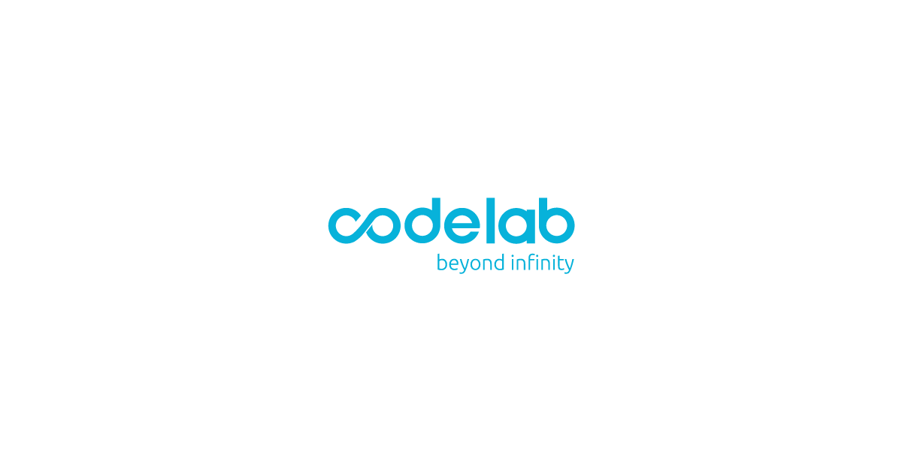
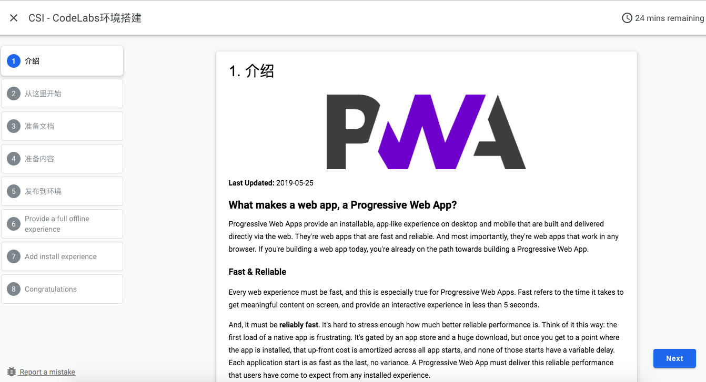
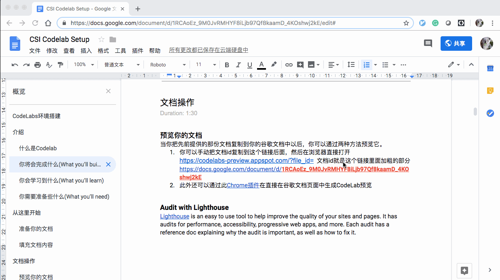
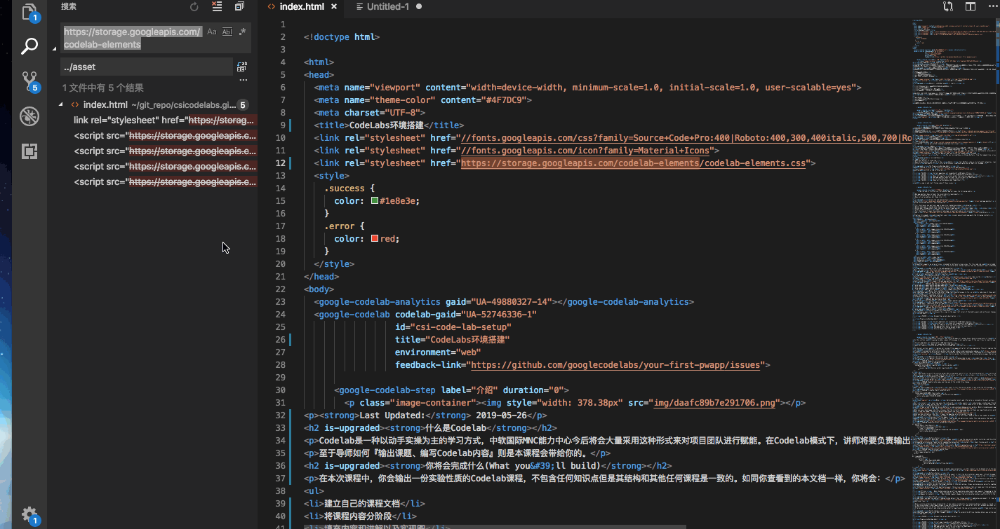
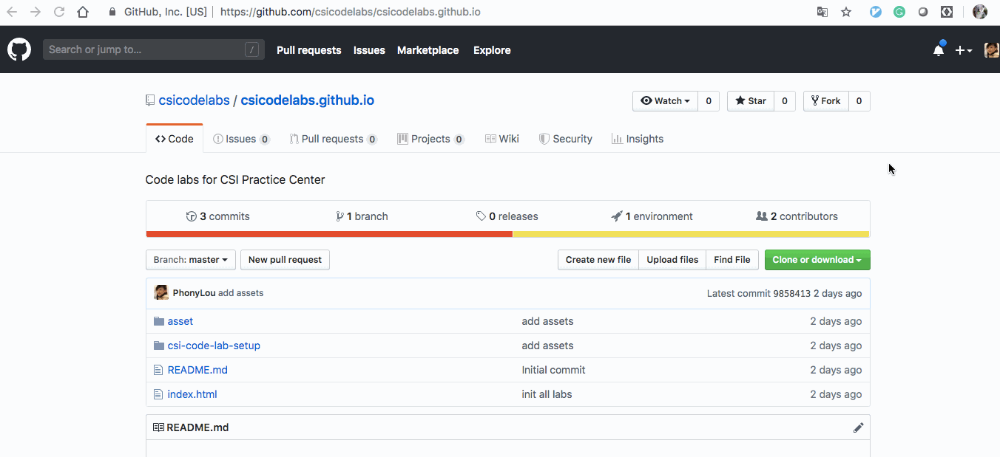
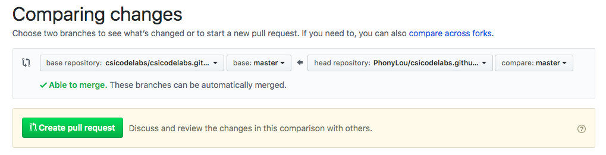
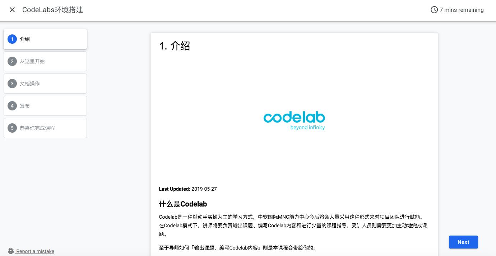

Last Updated: 2019-05-27
Codelab是一种以动手实操为主的学习方式，中软国际MNC能力中心今后将会大量采用这种形式来对项目团队进行赋能。在Codelab模式下，讲师将要负责输出课题、编写Codelab内容和进行少量的课程指导，受训人员则需要更加主动地完成课题。
至于导师如何『输出课题、编写Codelab内容』则是本课程会带给你的。
在本次课程中，你会输出一份实验性质的Codelab课程，不包含任何知识点但是其结构和其他任何课程是一致的。如同你查看到的本文档一样，你将会：

本课程专注于如何产生Codelab本身，不需要其他技术知识。模板文件已经准备好，如果需要代码的地方也只需要简单的复制粘贴即可。
我们在将线上文档转化为线下文件时需要用到命令行去访问谷歌服务，因此你的命令行也需要能访问到谷歌文档
有很多老运动员可以自己查看CodeLab文本规范来学习如何编写教学内容，但是为了方便大家，我觉得提供一份范例文档是必要的。把这份文档拷贝到你的谷歌文档库中，并且在其基础上修改即可。
这里是你工作的主要部分，把你想要交给受训人员的都写下来，请务必包括关键细节部分，相信我如果你在某些关键内容上搞一个任何人都不知道的魔法操作Duang的一下完成了你的演示，受训的同事一定会用差评来回报你。
当你把先前提供的那份文档复制到你的谷歌文档中以后，你可以通过两种方法预览它。

claat是一个用Go语言编写的Codelab命令行工具，你可以直接下载安装包或者用Go安装
go get github.com/googlecodelabs/tools/claat使用claat命令可以方便地把谷歌文档转化成多种格式的文件，默认情况下我们可以不加任何参数即可生成文档，命令如下
$ claat export 1RCAoEz_9M0JvRMHYF8iLjb97Qf8kaamD_4KOshwj2kE
ok csi-code-lab-setup
第一次使用的时候会要求进行OAuth授权，按提示把URL复制到浏览器中生成code粘贴回命令行即可。
由于某些原因，生成的HTML文件中引用的谷歌CSS和JS文件不可达，因此需要将其改为引用本地文件。

目标工程为https://github.com/csicodelabs/csicodelabs.github.io

把先前claat命令生成的文件夹内容添加到Git仓库，修改根目录下的index.html文件以确保你的修改可被访问到，并且提交到远端。
发起Pull Request向最终仓库提交代码。

当merge结束，即可在https://csicodelabs.github.io/ 查看修改。

恭喜你成功完成了本课程，完成了一次Codelab课程输出。